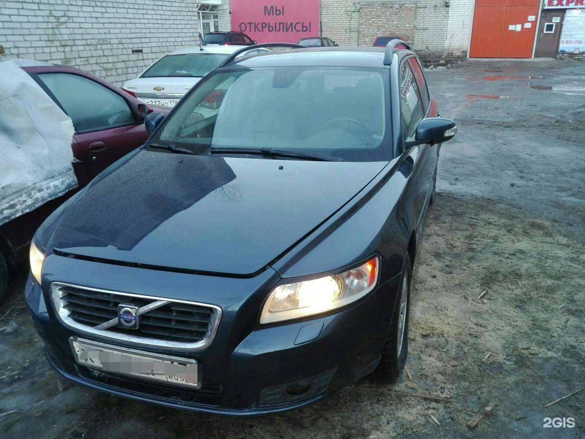
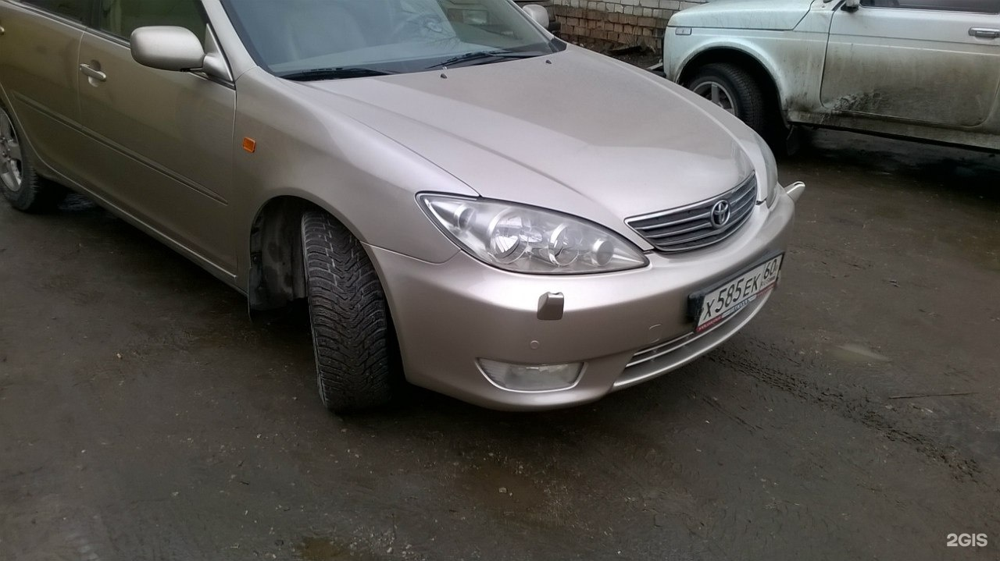
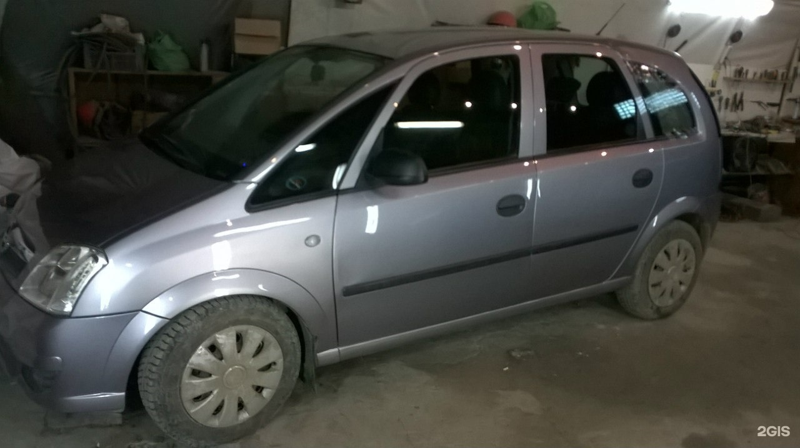
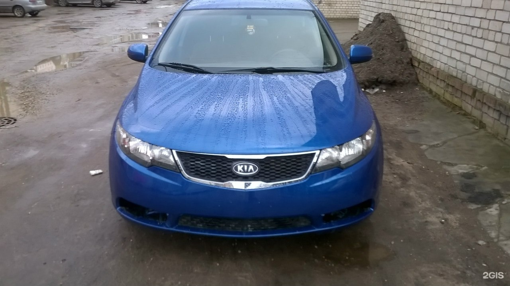

Демо-концепт · текущий прайс ещё не подтверждён
Работы с кузовом
Кузовной ремонт
Восстановление геометрии
Покраска
Полировка
Ремонт вмятин
Сварка
Обсудите кузовной ремонт по телефону
ПозвонитьЧто отмечают клиенты
В отзывах положительно оценивают восстановление кузова после повреждений.
Некоторые посетители хвалят скорость покраски и кузовных работ.
Есть положительные отзывы о вежливом общении сотрудников.
Пересказ мнений посетителей без имён авторов. Все отзывы в 2ГИС
Услуги и цены
Автомобили на фотографиях




Как нас найти
Псков, Инженерная улица, 9/2, 1 этаж
Запсковье
Часы работы
- По предварительной записи: Пн–Пт 10:00–18:00
Телефон
+7 (951) 755-65-65